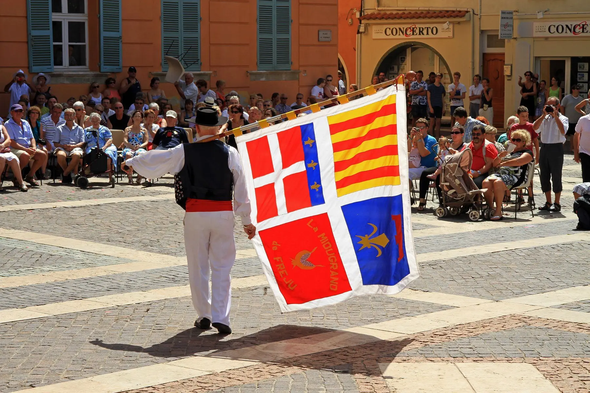
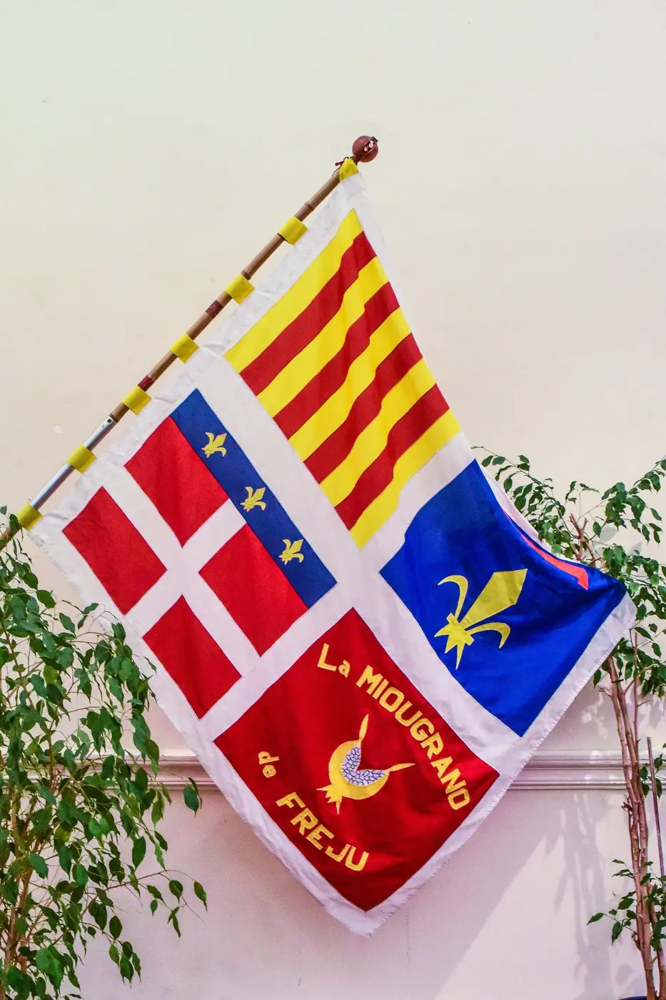
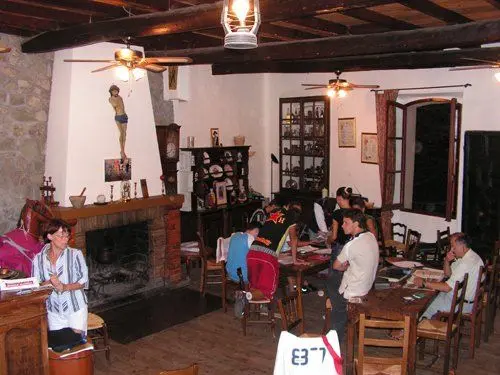
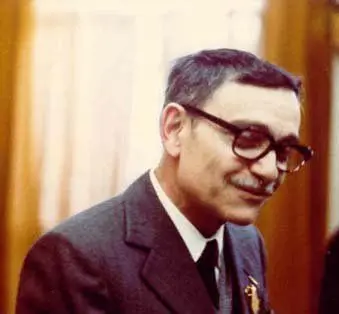
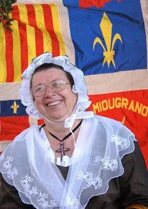
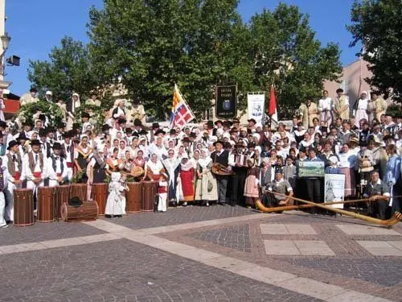

L'ensemble
Un groupe de maintenance des traditions provençales, né à Fréjus l'année du centenaire de Mirèio.
Faire vivre « l'Eime » provençal
L'ensemble folklorique La Miougrano (la grenade en provençal) de Fréjus a été créé en 1959 pour maintenir les traditions et la culture de Provence, mieux « l'Eime », la façon d'être de notre patrie provençale.
Depuis lors, le groupe remet à l'honneur la danse, la musique, le chant, les costumes, les traditions et la langue provençale. Il participe ou organise toutes les manifestations traditionnelles fréjusiennes — Fête du raisin, Bravade, Foire aux santons, messe de minuit — et représente la Ville ou la Provence lors de rencontres folkloriques en France et à l'étranger.
Aujourd'hui, La Miougrano compte une centaine de personnes, qui se réunissent plusieurs fois par semaine pour les répétitions et l'apprentissage en danse, musique ou chant choral.

Sept fondateurs, comme le Félibrige
Naissance de La Miougrano
Autour de l'abbé Maurice Toti et du Dr Albert Ciamin se réunissent Pascal Toti, Paul Roux, Michel Roberto, Claude Piazza et Louis Sénequier. La date — anniversaire de la fondation du Félibrige, l'année du centenaire de Mirèio — n'a rien d'un hasard. Le nom rend hommage au poème de Théodore Aubanel, La Miougrano entre-duberto.
Des débuts bouleversés
Une seule danse est apprise, la fricassée. La catastrophe du barrage de Malpasset interrompt l'activité : les jeunes du groupe sont parmi les premiers à donner l'alerte.
Le vrai départ
Volte, rigaudon, cordelles et mazurka entrent au répertoire. Le groupe obtient son local, le Fougaù, adhère au Félibrige et renoue avec la messe du raisin. Le 20 décembre, le « Mystère de Noël » est joué pour la première fois.
Sur les routes
34 représentations hors de Fréjus en 1961, puis un périple de 4000 km en Allemagne et en Suisse en 1963. En décembre 1963, première participation à la messe de minuit.
Fifres et tambours
Création des « Fifres et tambours du 1er Régiment de Provence », évoquant le régiment d'infanterie créé en 1684.
Une centaine de membres
Danseurs, tambourinaires, fifres, choristes et couturières perpétuent l'héritage, de génération en génération.
Ce qui nous rassemble
🌿 Transmettre
Danses, airs, chants et savoir-faire se transmettent de génération en génération, des plus jeunes aux plus anciens.
📜 Rechercher
Recherche historique, reconstitution fidèle des costumes fréjusiens, archives et publications.
🗣️ Parler provençal
La langue de Mistral et d'Aubanel au cœur de nos chants, de nos spectacles et de notre devise.
🤝 Partager
Fêtes, rencontres folkloriques et échanges avec des groupes du monde entier.
Au rai que l'amadure moun cor se durbiguè.Devise de La Miougrano — « Au soleil qui me mûrit, mon cœur s'ouvre »
Le Fougaù
Rue Grœcinus, en plein cœur historique, cette ancienne dépendance des appartements de l'Évêque de Fréjus était une grange en ruine lorsque le Dr Ciamin la céda à l'association en 1959. Les membres en ont fait une maison provençale et un lieu de vie : un crucifix en bois polychrome du XVIIe siècle, retrouvé dans les décombres, trône aujourd'hui au-dessus de la grande cheminée.
On y répète chants et musiques, on y coud les costumes, on s'y retrouve pour les veillées, le cacho-fio et les treize desserts de Noël.

Figures & bureau
Dr Albert Ciamin
Médecin, historien local et poète, président du syndicat d'initiative et maître d'œuvre du Félibrige, à l'origine du renouveau des fêtes fréjusiennes.

Paul Roux
Linguiste et professeur, Capoulié du Félibrige de 1982 à 1989 — successeur de Frédéric Mistral à la tête du mouvement.

Monique Orlandini
Danseuse, trésorière puis présidente, créatrice de la majorité des costumes du groupe. Pour tous, « Tatie Momo ».
Le bureau actuel
- 👑Présidence
Nom à compléter - ✍️Secrétariat
Nom à compléter - 💰Trésorerie
Nom à compléter
Le groupe aujourd'hui
- 💃Danseurs et danseuses
une quarantaine, dès 13 ans - 🥁Musiciens
tambourinaires (galoubet-tambourin), fifres et tambours du 1er Régiment de Provence - 🎶Chorale
une trentaine de chanteurs en costume - 🧵Atelier couture
une dizaine de couturières
Effectifs indicatifs d'après les présentations publiées par l'association.
La Miougrano dans le monde
Le groupe a été invité à représenter Fréjus et la Provence à de nombreuses reprises : Hambourg, Berlin, Édimbourg, Cardiff, Gdańsk, Genève, Liège, Paola, Tolosa, Fredericksburg aux États-Unis… et des dizaines de villes de France.
Tous les cinq ans, c'est au tour de Fréjus d'accueillir : La Miougrano organise un festival folklorique pendant la Fête du raisin, avec des groupes invités d'Europe et d'ailleurs.
